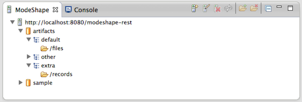
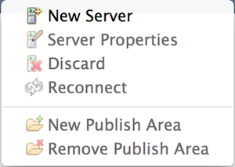

). If a connection to a server cannot be established that server
icon will be decorated with an error overlay image.
). If a connection to a server cannot be established that server
icon will be decorated with an error overlay image.The ModeShape View displays the registered servers hosting ModeShape repositories. For each server, the repositories
and repository workspaces are also displayed. There are view toolbar buttons to create a new server
(), edit a selected server's properties
(), discard one or more selected servers
(), reconnect to a selected server
(), and collapse all servers so that their repositories and workspaces can't
be seen (). If a connection to a server cannot be established that server
icon will be decorated with an error overlay image.
Here is what the ModeShape View looks like:
The view's context menu includes the new server, edit server properties, discard server, and reconnect to server actions. Here is what the ModeShape View's context menu looks like:
